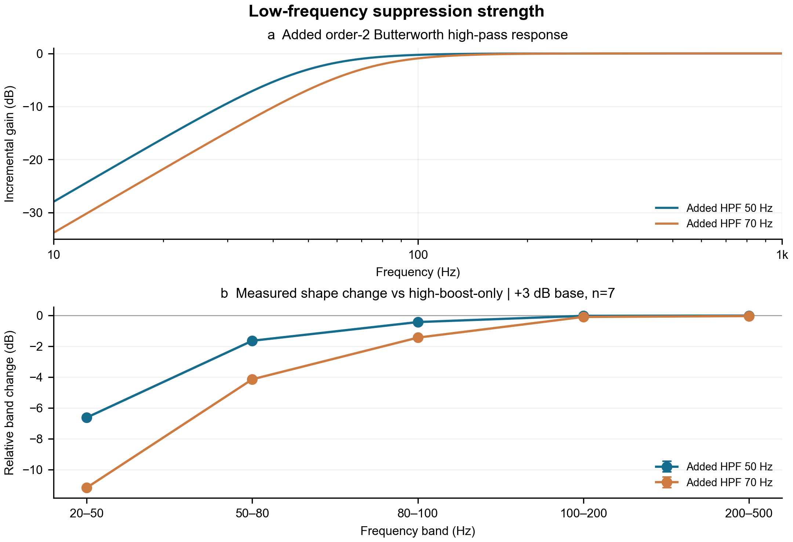

高频增强 + 低频抑制试听
保留原有高频 +3/+6 dB，分别叠加50/70 Hz低切；每组6份已匹配响度。
先试听 高频 +3 dB + 低切70 Hz，再与不加低切和低切50 Hz比较。
处理与验证说明
高频增强 + 低频抑制试听
在上次1.5 kHz高架+3 dB、+6 dB的基础上，分别附加二阶Butterworth高通（低切）50 Hz、70 Hz。
每组6份：高频+3不加低切、+3低切50、+3低切70；高频+6不加低切、+6低切50、+6低切70。共7组42份16 kHz单声道PCM24 WAV。
50 Hz低切较温和；70 Hz对20~80 Hz抑制更强。二阶截止处约-3 dB，每倍频程渐近12 dB。此处处理的是100 Hz以下为主的低频扰动；200~500 Hz语音主体仅受轻微影响，没有叠加250 Hz PEQ。
处理从上次已导出的高频增强音频开始，不再重复施加高架。旧试听、原始录音和现有代码均未修改。
每个编号内的6份音频重新匹配LUFS响度，只施加恒定增益，不使用动态压缩、AGC、限幅或降噪。若峰值余量不足，整组目标响度一起降低，确保公平比较。
每份实际WAV均回读检查：长度与输入相同，真峰值不高于-1 dBTP，同组响度差不超过0.12 LU。
先比较“高频+3不加低切”和“高频+3低切70”；若声音变薄，再比较低切50。再用+6系列判断较强高频提升是否增加齿音和底噪。
频谱图为匹配响度后的实际WAV。低频被削弱后，为匹配响度可能施加少量整体增益；因此频带表另提供以500~2000 Hz归一化的“音色变化”，便于区分滤波作用与整体音量变化。
全零片段附近的滤波过渡响应不能解释为缺失声音被恢复；已有削波也没有修复。
图表：figures/01_spectral_summary.png为7组中位数和四分位范围；02_low_cut_effect.png为理论响应与实测低频削弱；pair_01~07_spectra.png为各组结果。
源数据和参数：preview_metrics.csv、band_comparison.csv、spectra.csv、low_cut_frequency_response.csv、preview_manifest.json。
